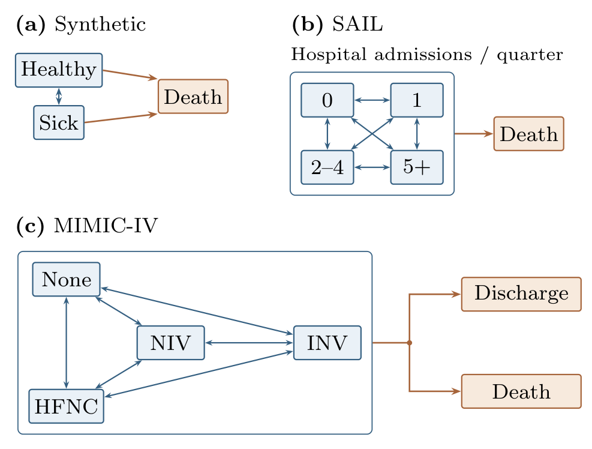
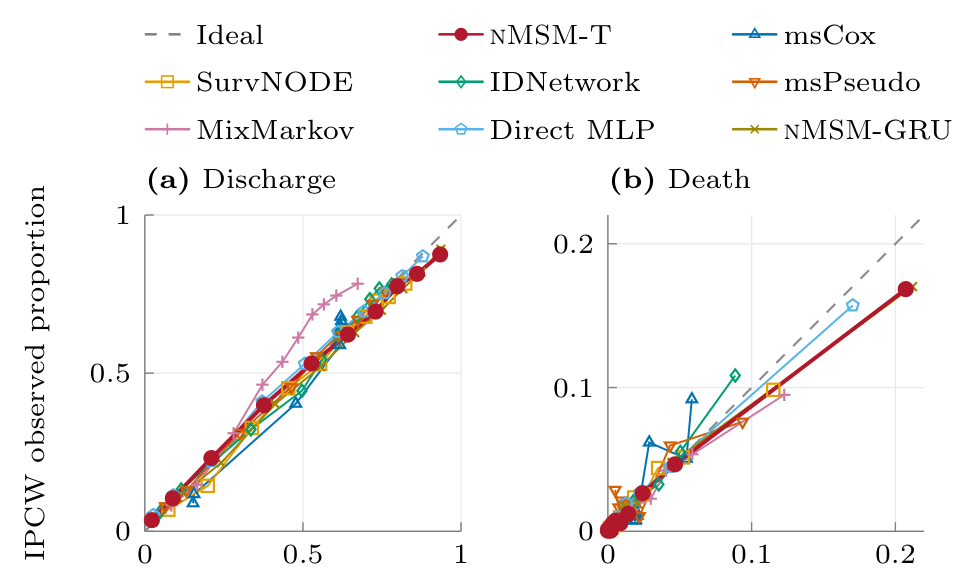
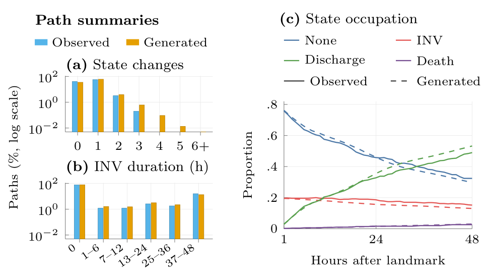
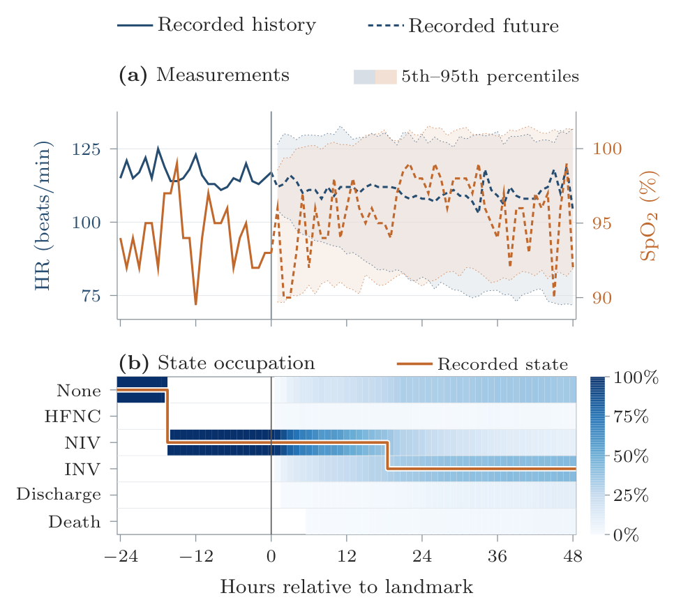

Neural Multi-State Model
nMSM: A Neural Multi-State Model for Joint State–Covariate Trajectory Forecasting
University of Edinburgh
Machine Learning for Health (ML4H) 2026 · Proceedings Track
Abstract
Multi-state models (MSMs) describe movement among mutually exclusive clinical states. Recent neural MSMs flexibly estimate transition risks, but typically forecast states without modelling how longitudinal covariates evolve into the future. This limits joint patient trajectory simulation, where generated covariates can influence subsequent state transitions. We introduce nMSM, a discrete-time autoregressive model that encodes irregular patient histories to jointly generate states, measurements, and observation patterns within an explicit multi-state graph. At each step, future covariates are conditioned on the sampled next state and the completed row is fed back autoregressively, closing the state–covariate feedback loop. On synthetic and clinical data, nMSM improves state forecasting over baselines and matches selected path summaries, including transition counts and state durations, supporting both marginal occupation forecasting and path-dependent simulation from a single learned process.
1The problem
First-event survival analysis models the time until one event. Real clinical courses involve intermediate conditions, repeated deterioration and recovery, and eventual absorbing outcomes such as discharge or death. MSMs represent this as transitions among mutually exclusive states on a directed graph. Forecasting these trajectories raises two challenges.
The current snapshot is not enough
Identical current measurements can follow steady recovery or a recent complication, so the model needs the ordered history, including what was measured and when.
Future transitions depend on future measurements
Those measurements are unknown beyond the forecast start. Fixed covariates cannot represent this feedback, and externally supplied update rules need a separate model of how covariates continue.
| Method | Longitudinal covariates | Multi-state graph | Joint forecast |
|---|---|---|---|
| msCox | ◦ | ✓ | × |
| SurvNODE | × | ✓ | × |
| msPseudo | × | ✓ | × |
| IDNetwork | × | ◦ | × |
| MSnet | × | ◦ | × |
| MixMarkov | × | ✓ | × |
| TransformerLSR | ✓ | × | ✓ |
| G-Transformer | ✓ | × | ✓ |
| nMSM-T / nMSM-GRU | ✓ | ✓ | ✓ |
2Method
nMSM is a discrete-time autoregressive model. States and measurements are aligned to a common time grid (one synthetic step, one ICU hour, or one SAIL quarter). Each step samples the next state, then the next row of covariates given that state, and feeds the completed row back in.

1 · Encode the history
Each row holds the state, the measurements, and for every feature a missingness mask (newly measured?) and a time gap (steps since last measured). Dwell time, baseline covariates and binary attributes are also inputs. A causal Transformer (nMSM-T) or a GRU (nMSM-GRU) maps \(\mathcal{H}_t\) to \(\mathbf{h}_t\).
2 · Sample the next state
The state graph is imposed directly: the head gives log-odds \(\eta_{t,b}\) of moving to each permitted destination, relative to staying. Prohibited transitions get zero probability by construction, and absorbing states only lead to themselves.
3 · Sample the covariates given that state
For each feature, the covariate head samples whether it is measured, \(M \sim \mathrm{Bernoulli}(\rho)\); its value if measured, \(X^{\mathrm{obs}} \sim \mathcal{N}(\mu, \sigma^2)\); and binary covariates, \(B \sim \mathrm{Bernoulli}(\nu)\). The future recording pattern is generated too.
4 · Complete the row and repeat
A measured feature replaces the carried value and resets its gap; otherwise the gap grows. Dwell time resets on a state change. The completed row becomes history for the next step: the state–covariate loop.
Constrained next-state distribution
With adjacency \(\mathsf{A}\) and current state \(a\), for permitted destinations \(b \in \mathcal{A}(a)\):
Joint factorisation
Measurements can differ by destination, so the covariate head is conditioned on the sampled next state. With \(V_{t+1}\) the next measurements, observation indicators and binary covariates:
Joint trajectory forecasting
From a landmark history \(\mathcal{H}_L\), nMSM samples \(R\) Monte Carlo trajectories over the horizon. Occupation probabilities average the state-head probabilities across the simulated histories:
Averaging the paths gives occupation forecasts. Keeping them gives full trajectories, which answer pathway questions: how many state changes, how long on invasive ventilation, and with what measurements along the way. Training weights the covariate objective by \(\lambda_{\mathrm{cov}}\): \(\mathcal{L}(\theta,\phi) = \mathcal{L}_{\mathrm{state}}(\theta) + \lambda_{\mathrm{cov}}\,\mathcal{L}_{\mathrm{cov}}(\theta,\phi)\).
3Evaluation
We evaluate nMSM across three settings spanning different temporal resolutions and sources of history dependence.

| Synthetic | MIMIC-IV | SAIL | |
|---|---|---|---|
| Cohort | 8,000 illness–death trajectories | 50,873 ICU stays | 28,321 participants |
| Time step | one interval | one hour | one quarter |
| Horizon | 12 steps | 48 hours | 6 quarters |
| Landmarks | steps 15 / 24 / 37 | hours 24 / 48 / 84 | rounded follow-up quartiles |
MIMIC-IV states are hourly respiratory support. HFNC: high-flow nasal cannula oxygen; NIV: non-invasive ventilation; INV: invasive ventilation.
Comparators. msCox (classical statistical MSM), MixMarkov (state-path simulator), SurvNODE, IDNetwork and msPseudo (neural state forecasting), and a snapshot Direct MLP that predicts occupation from the landmark state and covariates without earlier history.
Protocol and metrics. All methods share five patient-level outer folds, prediction targets and landmarks. Landmark-conditional IPCW handles right censoring. We report integrated Brier score (IBS), multiclass NLL, time-integrated AUROC (iAUC), MAE and ECE. Comparisons use corrected resampled tests with Holm adjustment.
4Results
State forecasting and calibration
Across all datasets and landmarks, both nMSM variants achieve the best mean IBS and iAUC among the evaluated methods. The advantage over the snapshot Direct MLP is largest on the history-dependent synthetic task. On MIMIC-IV the gap is narrower, but nMSM retains a significant IBS advantage at every landmark.
| Method | Synthetic | MIMIC-IV | SAIL | |||
|---|---|---|---|---|---|---|
| IBS ↓ | iAUC ↑ | IBS ↓ | iAUC ↑ | IBS ↓ | iAUC ↑ | |
| msCox | .1588 | .7695 | .0723 | .8007 | .0769 | .6864 |
| SurvNODE | .1703 | .7083 | .0699 | .8116 | – | – |
| IDNetwork | .1709 | .7101 | .0693 | .8148 | .0895 | .6075 |
| msPseudo | .1711 | .7025 | .0695 | .7567 | .0890 | .6265 |
| MixMarkov | .1713 | .7182 | .0722 | .8111 | .0911 | .6504 |
| Direct MLP | .1591 | .7712 | .0644 | .8668 | .0757 | .6974 |
| nMSM-T | .1430 | .8195 | .0626 | .8858 | .0685 | .7255 |
| nMSM-GRU | .1437 | .8186 | .0617 | .8902 | .0701 | .7195 |
SAIL omits SurvNODE because secure-environment compute limits prevented timely training.

Value of history and joint continuation
Targeted ablations isolate which parts of the formulation contribute to forecasting performance. Removing missingness masks and time gaps produces the largest deterioration, and replacing generated measurements with conditional means or carried-forward values also worsens state forecasting.
| Control | ΔIBS |
|---|---|
| Refitted components | |
| No masks/gaps | +.00336* |
| No next-state conditioning | +.00121 |
| Frozen-model continuation and order | |
| Conditional means | +.00177* |
| Value-LOCF | +.00221* |
| Scrambled history | +.00214* |
Generated paths
Across 500 held-out MIMIC-IV stays, nMSM-T closely reproduces the observed distributions of state-change counts and cumulative invasive-ventilation duration. Discharge occupation is overpredicted at 48 hours (Figure 4c), so agreement on selected path summaries does not imply recovery of the full trajectory distribution. Across 16 variables, 98.54% of newly generated measurements remain within preprocessing ranges.


Policy evaluation through longitudinal g-computation
When interventions affect measurements that subsequently influence later decisions and state transitions, action-conditioned nMSM can generate them within the same rollout used for longitudinal g-computation. On synthetic data with known policy outcomes, mean-corrected nMSM-T achieves occupation error comparable to the state-aware G-Transformer and lower death-contrast error, although its covariate RMSE is higher.
| Method | Occupation MAE | Covariate RMSE | Death |Δ| |
|---|---|---|---|
| Linear | .1068 | .3710 | .0502 |
| G-Transformer | .0089 | .0729 | .0287 |
| nMSM-T-cal | .0087 | .0898 | .0033 |
Accurate policy contrasts do not guarantee equally accurate intermediate covariate trajectories. Clinical application would additionally require consistency, sequential exchangeability, and positivity.
Fast occupation forecasts through distillation
Full Monte Carlo rollout is only needed when complete trajectories are. A lightweight head trained on the frozen encoder approximates the simulator’s occupation forecasts, reducing matched CPU inference from 2336.49 to 1.41 ms per history across 683 held-out histories while retaining similar IBS, NLL and ECE.
5Limitations
- Errors can accumulate, because generated measurements are fed back into later predictions. Covariate prediction error grows with the horizon.
- Gaussian emissions occasionally leave preprocessing ranges and do not capture residual cross-variable dependence.
- Transportability may depend on local recording practice, because nMSM learns the observation process.
- The clinical graphs are dense among living states and use a fixed time grid. Sparse graphs and continuous-time formulations remain to be tested.
6Code
The repository contains the model, preprocessing, training and evaluation code for the primary synthetic and
MIMIC-IV comparison. It contains no patient data and no trained weights. Every command prints its plan
unless you pass --execute.
# install (after installing a PyTorch build for your platform)
python -m pip install -e .
# data
python reproduce.py prepare-synthetic --execute
python reproduce.py prepare-mimic --raw-root /path/to/files --execute
# train and evaluate
python reproduce.py train --dataset synthetic_full --device cuda --execute
python reproduce.py train --dataset mimic --device cuda --execute
python scripts/summarize_primary.py --runs runs --data-root data --output resultsMIMIC-IV input is the credentialed PhysioNet temporal respiratory-support dataset v1.1.0. SAIL analyses ran inside the SAIL secure environment, and those data cannot be redistributed. See the README for options and training notes. Code released under the MIT License.
7Poster

The 24 × 36 in poster presented at ML4H 2026. Download the PDF.
Citation
@inproceedings{ries2026nmsm,
title = {{nMSM}: A Neural Multi-State Model for Joint State--Covariate Trajectory Forecasting},
author = {Ries, Maxmillan and Mohan, Karthik and Guthrie, Bruce and Seth, Sohan},
booktitle = {Proceedings of the Machine Learning for Health (ML4H) Symposium},
series = {Proceedings of Machine Learning Research},
year = {2026}
}